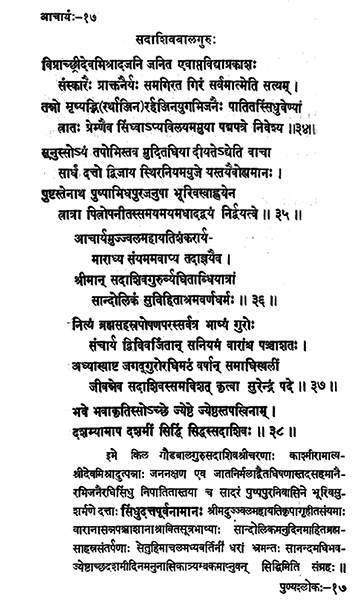

17. आचार्य - 17 - सदशिवबालगुरुः
विप्रात् ••• निवेशय ॥ ३४ ॥
सूनुः ••• निर्द्वयत्वे ॥ ३५ ॥
आचार्य ••• श्रमवर्णधर्मः ॥ ३६ ॥
नित्य ••• पदे ॥ ३७ ॥
भवे ••• सदाशिवः ॥ ३८ ॥
The one who was born to a brahmin Śrīdeva Miśrā; soon after the birth uttered the Truth that 'everything is Ātman' due to the samskāras of the previous birth; the Buddhists and Jains unable to counter the doctrine threw him in the river Sindhu, who saved his life by placing him lovingly on the lotus petals.
Being carried by her (river Sindhu) he (Sadāśivabāla) was given to a brahmin endowed with austerities saying "pleased by your austerities/penance today this boy/child is given"; then being asked/enquired by Bhūrivasu of Pushpapura and initiated by him - the saviour - father, he held high the school of non-dualism.
Preceptor Śrī Sadāśivabāla having served with reverence Śrī Ujjvala Śaṅkarācārya, got initiation, adhering to the principles of asceticism well carried out voyage in palanquin.
Preceptor Sadāśiva, always intent on feeding one thousand brahmins, moved around everywhere imparted as per injunctions, for fifty times and governing the maṭha of the Universal Preceptor for eight years, then installing Surendra spent sometime, reached the tranquil state in Tamaraparni (It is seen in P/19 & 20 of the book that he attained jivasamadhi in Triyambakeshwar.).
Sadāśiva, the great among ascetics, the personification of Lord Śiva, the accomplished One, attained his final beatitude on the tenth day of the bright fortnight in the month of Jyeṣṭha of the year Bhava.
